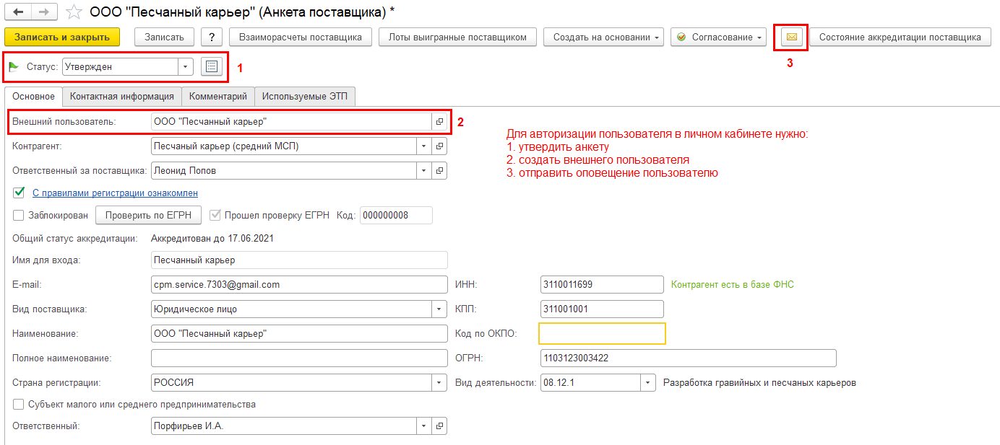

Предназначена для регистрации поставщиков при самостоятельной регистрации в личном кабинете.
Пользователь для первичного входа в личный кабинет предопределен "Саморегистрация поставщика". Имя данному пользователю можно переопределить в "Администрирование" - "Настройки пользователей и прав" - "Внешние пользователи" и передавать поставщикам или разместить на сайте в открытых источниках. После авторизации пользователь получит новые защищенные данные для работы в личном кабинете.
Анкета - первый и единственный документ, который встречает пользователя, регистрирующегося в личном кабинете. Поставщику предлагается заполнить анкету, указав данные организации и отправить ее на проверку.
Настройки, согласно которым отображается платежный календарь, делятся на две группы:

Проверка и авторизация (администратор системы)
Анкеты размещаются в списке "Анкеты поставщиков" подраздела "Аккредитация и квалификация". Проверяющий видит больше информации и располагает инструментами проверки по ЕГРН. В случае успешной проверки необходимо авторизовать пользователя. Для этого требуется утвердить документ, создать внешнего пользователя, отправить оповещение новому пользователю.

| Графическая схема справки |
|
- Корпоративные закупки |
| С другими схемами системы можно ознакомиться по ссылке. |